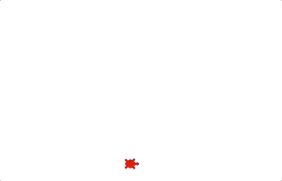
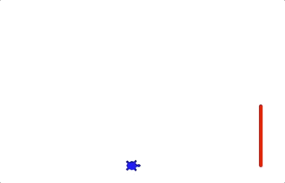
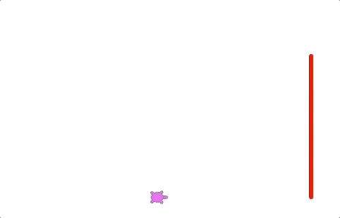

17.9. Project: Local Turtle Races¶
Hopefully, by the end of this project you will have a program that you just can’t resist running over and over again.
On your mark, get set, go!¶
You are going to make turtles race across a straight track that is 400 pixels long. The first one to the finish line wins!
17.9.1. Part A: Drawing Space Setup¶
Open Visual Studio Code and create a new project directory and a
turtle_race.py file.
- In
turtle_race.py, import theturtleandrandommodules. - Define a
main()function and create a newScreen()object. - Use the
.title()and.setup()methods on the object to give the drawing window a title and a size of 600 x 600 pixels. - The last statement in
main()should call the.exitonclick()method on the object.
Run your program to test your window features.
17.9.2. Part B: Create Turtles¶
Define a function called create_racing_turtle() that:
- Takes two parameters, one for color and one for shape. Assign the default
values
'black'and'turtle'for these variables. - Creates a new turtle object and assigns it the color and shape values.
- Assigns every turtle the same
pensizeandspeed(3and8are good choices). - Returns the new turtle object.
In main(), call the create_racing_turtle function and assign the
returned object to a variable. Verify that the function works by drawing a
single line with variable_name.forward(100).
Once the function works, use it to create at least 4 turtle objects. Put each
of these into a list called racers.
17.9.3. Part C: Start & Finish Lines¶
Now that you’ve created some racing turtles, you need to draw the finish line and put the objects in their starting positions.
17.9.3.1. Draw the Finish Line¶
To mark the finish line, you will use an invisible turtle to draw it.
Note
Some of the methods on this page may be unfamiliar to you. That’s OK. We provide directions for how to use each one, and you can always check the Python documentation for more details.
Define a function called draw_finish() that:
Takes the length of the
racerslist as the parameter.Creates a new
Turtleobject and assigns it to a variable.Calls the
.hideturtle()method on the object. Lines will still show up in the drawing space, but the turtle shape will remain invisible. The method requires no arguments inside the parentheses().Sets the
pensize, thespeed, andcolorfor the turtle. Feel free to choose any values for these properties you want.Uses the
penup,pendownand movement methods to move the turtle forward 200 pixels and then draw a vertical line up towards the top of the screen. The length of the line should depend on how many turtles are in theracerslist.Finish Line Length¶ Number of Turtle Racers Length in Pixels 2 50 3 100 4 150 5 200 draw_finishdoes not return any value.
In main(), call draw_finish several times, using different integers for
the argument.
17.9.3.2. Place Turtles at Start¶
With four racing turtles, you need to make a starting lineup that looks something like the figure below. Turtle shapes and colors may vary. The numbers show the object positions compared to the center of the screen.
Turtles start 200 pixels to the right of the center of the screen. The finish line is 200 pixels to the left.¶
By default, all new Turtle objects start in the center of the drawing
space, which has the coordinates (0, 0). This means each new turtle gets
stacked on top of all the others. We need to spread them out before they can
race!
Define a function called start_positions() that:
Takes the
racerslist as a parameter.Includes a loop to iterate through the list. For each turtle object, use the
.goto(x_value, y_value)method to move the turtle to its starting point.goto()places the turtle at a specific spot on the screen.x_valuerepresents the left-right position, and each turtle will use-200for this.y_valuerepresents the up-down position. The first turtle in the list will have ay_valueof0. The second will be50. The third100, etc.Tip
Use variables to calculate
y_valueinstead of typing in specific numbers! Hint: Maybe you can relatey_valueto anindexin theracerslist…Returns no value.
In main(), call start_positions several times, placing two or more
turtles in the racers list. No matter how many objects are in racers,
the start and finish lines should always match in length.
17.9.4. Part D: Run the Race¶
The statements to control the turtle race go inside the main() function.
After setting up the drawing window, your code should:
Create the turtles and put the objects in the
racerslist.Call the
draw_finishandstart_positionfunctions.Use nested loops to move the turtles:
Every turn, each turtle moves forward a random distance. Values in the range of 5 - 20 pixels are a good place to start, but you can adjust the end points as you wish.
Include a conditional to check each turtle after it moves. The objects all start at
-200and move toward200. How can you determine if the turtle crossed the finish line? (There are multiple correct ways to do this).When a turtle crosses the finish line, use the
.write()method to display a victory message on the screen!turtle_name.write("I win!\t", align='right')
Ties are possible! When a turtle crosses the finish line, the racing loops should stop. However, they should end AFTER all of the turtles in the list get a chance to move. This means multiple turtles can cross the finish line on the same turn.
Without this condition, the turtle at index 0 gets a big advantage in the race, since it moves first.
Turtles that reach or move past the finish line in the same turn tie.¶
Run your program several times to make sure that the same turtle doesn’t always win the race! The results are supposed to be random.
17.9.5. Part E: Bonus Missions¶
Once you get your four turtles racing, try adding one of these enhanced features:
- Assign a random color or shape to each turtle.
- Randomly select the number of turtles to race. Use a loop to create the
objects and append them into
racers. - Add a Replay option to your code to ask the user if they want to run another race.

|

|

|